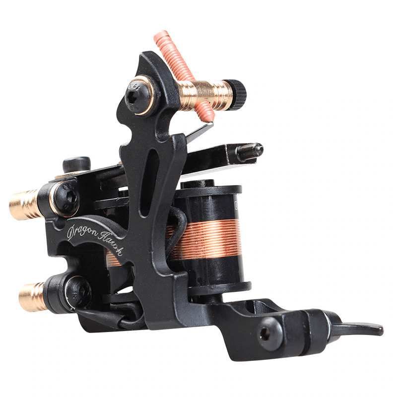
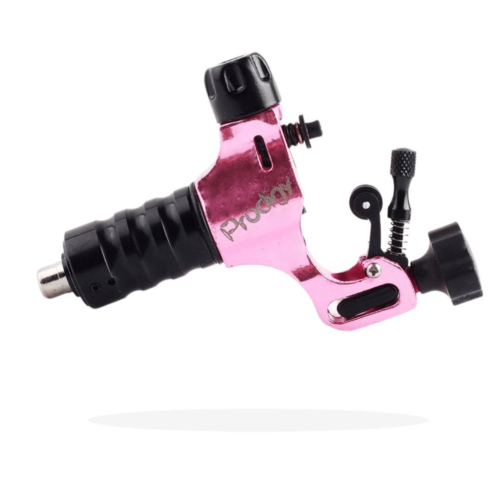
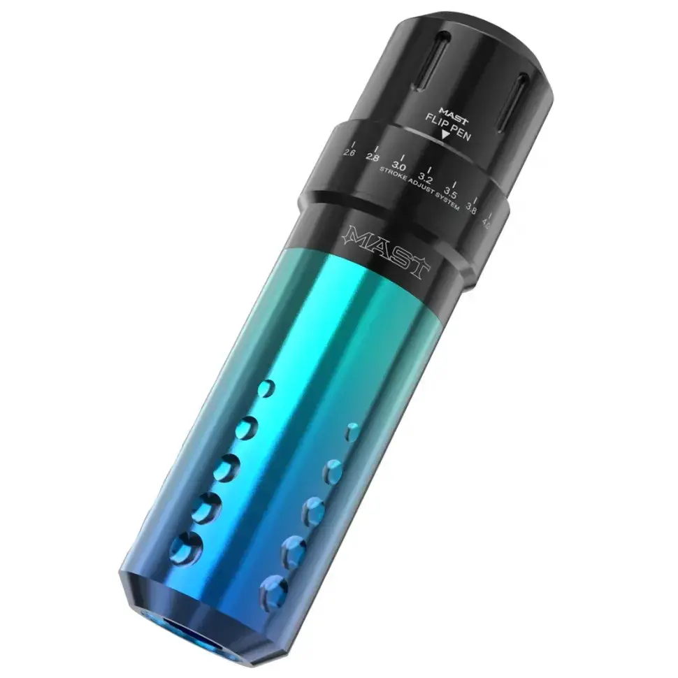

Хенд поук
Хенд поук - це особливий метод нанесення татуювань за допомогою голки та барвника, який був популярний ще задовго
до винаходу індукційної тату-машинки. А ще цей спосіб нанесення є менш болючим, оскільки голка в руці майстра
робить менше підшкірних ударів, ніж машина.
Принцип нанесення тату - Голка проколює шкіру та створює точку, з якої потім можна провести лінію та нарешті
створити повноцінний малюнок – все залежить від щільності нанесення та відстані між проколами.
Переваги цього стилю:
Загоюється в рази швидше, ніж машинна робота, адже машина розриває та травмує шкіру.
Процес нанесення майже безболісний.
Індукційні тату машинки

Принцип роботи у наступному: індукційний механізм передає поступальний ударний рух за допомогою електромагніту
через бар на кінчик голки. Функцію електромагніту виконують котушки.
Такі машини практично без змін сягнули наших днів і використовуються переважною більшістю тату майстрів у всьому
світі. Тому ви легко відрізните ці машинки за відсутністю двигуна та наявністю котушок. Для початку цього
достатньо для розуміння.
Особливості:
Безперечним плюсом такого інструменту для новачка є чіткий поділ машинок під певні підзадачі, а також стабільні
налаштування. Liner призначений для контуру, Shader – для фарбування.
Друга відмінна риса - так званий "скидальний момент", обумовлений конструкцією машини. Пігмент саме вбивається
всередину, залишається у крайній точці контакту під шкірою значно більше, ніж робить ротор. Це відбувається
рахунок високої швидкості поворотного руху. На роторах намагалися повторити цю ж особливість, але поки що
безуспішно.
Чи травматичніша індукція ротора? Їй складніше перебивати та перевантажувати шкіру, ніж роторною машинкою.
Особливо це актуально для новачків.
З мінусів:
Досить велика вага та сильна вібрація порівняно з іншими видами. Для новачка, який тільки перейшов із олівців та
маркерів, це може стати непереборним бар'єром.
Неможливість налаштувати машину самому без певних технічних знань.
Висока вимогливість до джерела живлення. Про малопотужні блоки навіть у форс-мажорних ситуаціях доведеться
забути.
Дуже багато залежатиме від вашого вміння. Особливо це стосується роботи, що вже зажила. Зручність роботи з цією
машинкою і ваша навичка малювання критично важливі для кінцевого результату.
Роторні тату машинки

Спочатку ж опишемо загальні риси, характерні всім.
Зусилля для введення та виведення голки у роторах – однакове. Рух монотонний “прошиваючий”, а не ударний.
У більшості машини "універсальні". При певній вправності та налаштуванні вони підходять під будь-які цілі.
Великі серійні виробники змагаються на ринку за рахунок планомірного розвитку та патентів на нові вузли машин,
а також якісного сервісу.
Ротор менш травматичний, але їм можна сильно перевантажити шкіру – особливо якщо часто повертатися до пройдених
місць.
Direct-drive (крутилка)
Передає зусилля від двигуна безпосередньо на штангу голки або картриджа. Мотор крутиться і створює обертальний
рух, через що штанга перебуває у постійному коливанні.
Складаються такі машини з мотора та рами. У виробництві та експлуатації кардинально не різняться, тому їх
виробляють майже всі серійні виробники та білдери.
Моделі дуже сильно залежать від якості та потужності мотора, чому деякі невиправдано багато важать, хоч і
коштують недорого. Вони сильно залежить від силового устаткування. На слабких блоках можуть починати поступово
розганятися і поступово гальмувати при натисканні і відпусканні педалі.
Slider (крутилка із санчатами)
Передає обертальний рух на Бар за допомогою передавального (connection rod) поздовжнього елемента. Це робить рух
голки більш наближеним до ударного та зменшує поперечні коливання. Штангу необхідно контролювати, проте для Бару,
який рухається прямолінійно, на багатьох моделях передбачений притискний механізм із важеля та коліщатка.
Машинки менш залежні від потужності (але не якості) двигуна, вони менш важкі і працюють на будь-яких блоках.
Pen

Машинка схожа на ручку. Вона використовує більш складний передавальний механізм, створений для унікальної
ергономіки та працює за рахунок акумулятора або блоку живлення.
Модель працює тільки на картриджах, а також дуже вимоглива і дорога в обслуговуванні через складну внутрішню
архітектуру. Така архітектура робить машинку ідеальною для м'якого фарбування, але далеко не найкращою для
контурної роботи.
Зручність/незручність, плюси/мінуси обумовлені лише архітектурою та ергономікою такого обладнання.